무선설비산업기사 (2005-03-20 기출문제)
1과목: 디지털 전자회로
1. 변조도 50%의 진폭변조에서 반송파 평균전력이 500[㎽]일 때 피변조파의 평균전력은 약 얼마인가?
- 523[㎽]
- 543[㎽]
- 563[㎽]
- 583[㎽]
(정답률: 알수없음)

2. 다음 논리 IC 중 전력소모가 가장 적은 것은 ?
- TTL
- ECL
- CMOS
- DTL
(정답률: 알수없음)
3. 그림과 같은 회로에 step전압을 인가하면 출력 전압은? (단, C는 초기 충전되어 있지 않은 상태이다.)
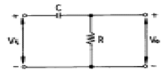
- 같은 모양의 step 전압이 나타난다.
- 아무 것도 나타나지 않는다.
- 0부터 지수적으로 증가한다.
- 처음엔 입력과 같이 변했다가 지수적으로 감소한다.
(정답률: 알수없음)
4. 그림과 같은 이상적인 연산 증폭기의 입력에 단위 계단 함수인 전압을 인가할 때 출력에 나타나는 전압파형은 ?
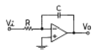
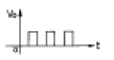
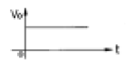
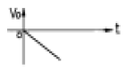
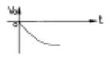
(정답률: 알수없음)
5. 그림의 논리회로에서 출력 X 의 논리식은 ?
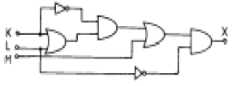
- X=LM
- X=LK+KM
- X=M+L+K
- X=K(K+L)+L
(정답률: 알수없음)
6. TTL에 비교하여 C-MOS 집적회로의 특징이 아닌 것은 ?
- 소비전력이 적다.
- 잡음여유도가 높다.
- 동작속도가 빠르다.
- 폭넓은 전원전압에서 동작이 가능하다.
(정답률: 알수없음)
7. 회로에서 Si 다이오드 양단에 걸리는 전압 VD 는 약 몇[V]인가 ?
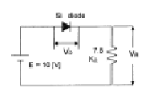
- 10.7
- 9.3
- 0.7
- 0.2
(정답률: 알수없음)
8. Gray code 0111을 binary code로 변환하면 ?
- 0100
- 0110
- 0101
- 0111
(정답률: 알수없음)
9. 그림과 같은 회로에서 V1 = V2 = 20[V]이면 Vo는 ? (단, 각 다이오드는 이상적인 특성을 갖는다.)
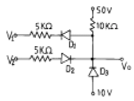
- 50[V]
- 40[V]
- 30[V]
- 20[V]
(정답률: 알수없음)
10. 윈브리지(Wien bridge) 발진회로에 관한 설명이 틀린 것은?
- 증폭기, R 및 C로 간단히 회로를 구성할 수 있다.
- 발진 주파수가 비교적 안정적이다.
- 발진 주파수의 가변이 용이하지 않다.
- 저주파 발진기 등에 많이 쓰인다.
(정답률: 알수없음)
11. 다음 RL회로에서 SW를 닫는 순간 기전력이 E일 때 t초 후에 흐르는 전류(i)는?
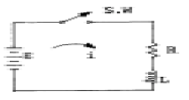
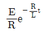
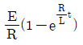
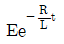
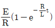
(정답률: 알수없음)
12. AM 변조에서 발생하는 측파대의 수는?
- 1
- 2
- 3
- 무한대
(정답률: 알수없음)
13. 그림과 같이 구성한 회로는 어떠한 작용을 행하는가?
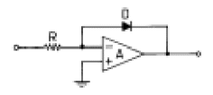
- 대수증폭
- 가산증폭
- 미분연산
- 적분연산
(정답률: 알수없음)
14. 다음과 같은 멀티플렉서 회로에서 제어입력 A와 B가 각 각 1일 때 출력 Y의 값은?
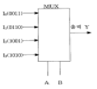
- 0011
- 0110
- 1001
- 1010
(정답률: 알수없음)
15. 다음 중 그 값이 작을수록 좋은 것은 ?
- 증폭기 바이어스 회로의 안정계수
- 차동 증폭기의 동상신호 제거비(CMRR)
- 증폭기의 신호대 잡음비
- 정류기의 정류효율
(정답률: 알수없음)
16. 다음 회로의 Gate는 ?
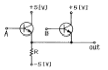
- AND
- OR
- NAND
- NOR
(정답률: 알수없음)
17. 크리스탈이 500[kHz]에서 공진하고 있다. 이 주파수에 대한 등가 인덕턴스가 4[H], 등가 커패시턴스가 0.0427[pF], 등가 저항이 10[㏀]이라 할 때, 이 크리스탈의 Q 값은 약 얼마인가?
- 1513
- 1457
- 1318
- 1256
(정답률: 알수없음)
18. 궤환 증폭기의 이득(폐루프 이득)에 관한 식은 ? (단, A : 기본 증폭도, Af : 궤환 증폭도, β: 궤환율)
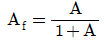
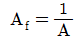
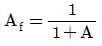
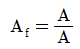
(정답률: 알수없음)
19. A, B 를 입력으로 하는 반가산기의 합 S 에 대한 출력 논리식으로 틀린 것은 ?
- S = A + B
- S = (A + B)(A + B)
- S = A ⒳ B
- S = A B + A B
(정답률: 알수없음)
20. 평형 변조회로의 출력에 나타나지 않는 것은 ?
- 하측파대
- 상측파대
- 상하측파대
- 반송파
(정답률: 알수없음)
2과목: 무선통신 기기
21. SSB수신기의 스피치 클래리파이어(Speech clarifier)의 사용목적은 ?
- 반송파와 국부 발진 주파수 편차를 적게 하기 위하여
- 수신기의 이득을 높히기 위하여
- 수신기의 선택 특성을 우수하게 하기 위하여
- 국부 반송파의 발진을 강하게 하기 위하여
(정답률: 알수없음)
22. 위상변조(PM)의 최대 주파수 편이는?
- 변조신호의 진폭에 반비례한다.
- 변조신호의 주파수에 비례한다.
- 위상감도 계수에 반비례한다.
- 변조지수에 반비례한다.
(정답률: 알수없음)
23. 단파 무선전화(AM) 송신기의 발사하는 전파의 주파수를 안정하게 하기 위한 방법이 아닌 것은 ?
- 발진기의 동조상태는 발진최강의 상태에서 약간 벗어나게 한다.
- 전원은 발진부와 변조부의 공용으로 하여 공급한다.
- 수정 공진자를 항온조 내에 둔다.
- 안정도가 높은 발진회로를 사용한다.
(정답률: 30%)
24. 진폭 변조회로에서 반송파 전력이 100[W]일 때 변조율은 60[%]라고 하면 한쪽측대파의 전력은?
- 6[W]
- 7[W]
- 8[W]
- 9[W]
(정답률: 알수없음)
25. 수신기 시험에 의사 공중선을 사용하는 이유는 ?
- 수신기의 입력 레벨을 감쇠시키기 위하여
- 표준 입력 신호를 공급하기 위하여
- 공중선에 의한 입력 회로와 등가회로를 구성하기 위하여
- 수신기의 감도가 좋아지기 때문에
(정답률: 알수없음)
26. 중간 주파수 455[㎑]인 슈퍼헤테로다인 수신기에서 1000[㎑]에 대한 영상주파수는 얼마인가?
- 1455[㎑]
- 1545[㎑]
- 1910[㎑]
- 545[㎑]
(정답률: 64%)
27. 수정 발진기에서 발진자가 어떤 임피던스 상태이면 가장 안정된 발진 상태를 유지할 수 있는가 ?
- 유도성
- 용량성
- 저항성
- 무한대
(정답률: 알수없음)
28. 다음은 위성에 사용되는 트랜스폰더 구성 부품들에 대한 설명이다. 틀린 것은 ?
- 저잡음증폭기는 미약하게 수신된 전력을 잡음이 작게 증폭시킨다.
- 다이플렉서는 일종의 방향성 결합기로서 송신 전파와 수신 전파를 분리시킨다.
- 주파수변환기는 상향링크의 주파수를 헤테로다인 방식을 사용하여 하향링크 주파수로 변화시킨다.
- 전력증폭기는 증폭 특성을 좋게하기 위해 반드시 선형영역에서만 동작시킨다.
(정답률: 알수없음)
29. 마이크로파용 송신기의 전력측정 방법 중 해당되지 않는 것은 ?
- 볼로미터 소자 이용
- 열량계 이용
- 방향성 결합기 이용
- 직선 검파기 이용
(정답률: 알수없음)
30. 다음 정류회로의 명칭으로 맞는 것은 ?
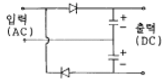
- 반파 정류회로
- 4배압 정류회로
- 반파 정류 배압회로
- 전파 정류 배압회로
(정답률: 알수없음)
31. 전원 정류기의 부하에 대한 전압 변동율을 측정하였더니 무부하시 출력전압은 Vo이었고, 부하시 출력전압은 VL이었다. 전압 변동율은 얼마인가 ?
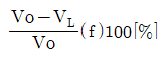
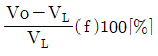
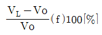
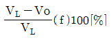
(정답률: 알수없음)
32. 다음 중 FM 송신기의 전력측정법이 아닌 것은?
- 열량계에 의한 전력측정
- C-M형 전력계법
- 직선검파기에 의한 전력측정
- 볼로미터 브리지에 의한 전력측정
(정답률: 알수없음)
33. 무선 송신기에 주파수 체배가 필요한 이유는?
- 수정편의 고유 주파수 이상의 주파수를 얻으려고
- 출력 회로에 나타나는 주파수의 고조파 성분을 B급으로 증폭하려고
- 기본 주파수의 정수배의 저주파를 증폭하려고
- 수정 진동자가 너무 얇으면 기계적으로 약하여 파손되기 쉽기 때문에
(정답률: 알수없음)
34. 다음 중 FM수신기와 AM수신기에서 공히 사용되는 것은 ?
- 국부발진기
- 주파수변별기
- 스켈치 회로
- 진폭제한기
(정답률: 알수없음)
35. 무선송신기를 500[㎐]로 변조하여 그 출력 파형을 오실로 스코프로 관측한바 A : B = 4 : 1이 되었다. 이때의 변조율은 ?
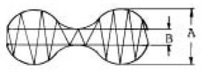
- 40[%]
- 60[%]
- 50[%]
- 80[%]
(정답률: 알수없음)
36. 슈퍼 헤테로다인 수신기에서 일반적으로 AGC는 어떠한 작용을 이용한 것인가?
- 궤환 작용
- 발진 작용
- 증폭 작용
- 변조 작용
(정답률: 알수없음)
37. FM 통신방식이 AM 방식에 비해서 신호대 잡음비가 좋은 이유로 가장 타당한 것은?
- 진폭제한기를 사용하므로
- 레벨변동이 크므로
- 점유주파수 대폭이 넓기 때문에
- 송신장치가 간단하기 때문에
(정답률: 알수없음)
38. SHF대 위성 수신기에서 저잡음 증폭기로 사용되는 것은?
- MASER
- PARAMETRIC 증폭기
- TWT증폭기
- TDA
(정답률: 알수없음)
39. 단측파대 통신에 이용되는 변조 회로는 ?
- 제곱 변조 회로
- 주파수 변조 회로
- 펄스 변조 회로
- 링 변조 회로
(정답률: 알수없음)
40. 무선 수신기의 일반적인 조건 중 틀린 것은?
- 감도가 우수할 것
- 선택도가 높을 것
- 안정도가 좋을 것
- 왜곡이 클 것
(정답률: 알수없음)
3과목: 안테나 개론
41. 반파장 다이폴 안테나에 대해 잘못된 것은 ?
- 반송 주파수의 λ /2 길이를 갖는 공진 안테나이다.
- 진행파형 안테나이다.
- 전류는 양쪽 끝에서 0 이 된다.
- 전압은 양쪽 끝에서 최대가 된다.
(정답률: 알수없음)
42. 자유공간에서 어느 거리를 두고 있는 두 점전하 사이에 작용하는 힘이 1.2[N]이다. 이때 두 점전하 사이에 비닐을 넣었더니 작용하는 힘이 0.3[N]이 되었다. 비닐의 비유전율은 얼마인가?
- 2.5
- 3.0
- 3.5
- 4.0
(정답률: 알수없음)
43. 그림과 같이 6[㎒] 의 반파장 안테나의 끝에서 전압 급전을 하고자 한다. 급전선 ℓ의 최소 길이는 ?
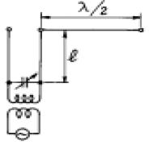
- 10 [m]
- 15 [m]
- 25 [m]
- 30 [m]
(정답률: 55%)
44. 복사 저항 40[W], 손실 저항 10[W]인 안테나에 100[W]의 전력이 공급되고 있을 때의 복사 전력은 얼마인가 ?
- 80[W]
- 90[W]
- 100[W]
- 110[W]
(정답률: 알수없음)
45. 델린저 현상에 관한 설명으로 옳은 것은 ?
- 주간의 구역만 영향을 받는다.
- 30[㎒]이상의 주파수가 영향을 많이 받는다.
- F층의 전자밀도가 가장 많이 증가된다.
- 발생주기가 규칙적이다.
(정답률: 알수없음)
46. Wave 안테나의 특징이 아닌 것은?
- 광대역성이다.
- 지향성은 단향성이다.
- 주로 수신용에 이용된다.
- 정재파형 안테나이다.
(정답률: 알수없음)
47. 다음 도파관창 중에서 LC 병렬 회로로 볼 수 있는 것은 ?
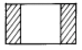
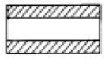
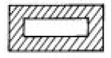
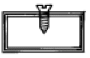
(정답률: 알수없음)
48. 통신 선로의 임피던스를 정합시키는 이유는?
- 부하에 전력을 최소로 공급하기 위해
- 반사계수를 1로 만들기 위해
- 투과계수를 0으로 만들기 위해
- 반사파가 생기지 않도록 하기 위해
(정답률: 알수없음)
49. 주간에 전리현상을 활발하게 하여 전리층의 전자 밀도가 크게 되는 원인은 ?
- 자외선
- 반사, 굴절
- 자기장
- 간섭
(정답률: 알수없음)
50. 야간에 타원편파의 수평편파 성분을 상쇄시켜 야간오차를 방지할 수 있는 안테나는 ?
- 웨이브 안테나(Wave Antenna)
- 루우프 안테나(Loop Antenna)
- 애드코크 안테나(Adcock Antenna)
- 슬리브 안테나(Sleeve Antenna)
(정답률: 알수없음)
51. 송, 수신 안테나의 높이가 각각 9[m] 및 4[m]일 때 직접파 통신이 가능한 최대 송수신 거리는 대략 얼마가 되는가?
- 10 [Km]
- 15 [Km]
- 21 [Km]
- 25 [Km]
(정답률: 알수없음)
52. 반파장 소자를 종횡으로 일정하게 배열하여 각 소자에 동위상 전류를 공급하면 한쪽 방향으로 지향성이 강해진다. 이 안테나는?
- V형 안테나
- 롬빅 안테나
- 빔안테나
- 제펠린 안테나
(정답률: 알수없음)
53. 평행2선식 급전선의 특성 임피던스는 무엇에 의해서 정해지는가?
- 선간거리
- 선의 굵기
- 선로의 길이
- 선간거리와 선의 굵기
(정답률: 알수없음)
54. 다음 중 차량지붕에 접속하여 이동통신에 사용되는 안테나는?
- 야기 안테나
- 막대(whip) 안테나
- 루프 안테나
- 롬빅 안테나
(정답률: 알수없음)
55. 초단파(VHF)의 통달거리에 그다지 영향이 없는 것은?
- 안테나의 높이
- 복사전력
- 지형
- 공전
(정답률: 알수없음)
56. 다음 중 전리층 반사파를 적게 하고 양청구역을 넓히기 위하여 만든 중파방송용 안테나는?
- 원정관 안테나
- 루프안테나
- 웨이브 안테나
- 애드콕 안테나
(정답률: 알수없음)
57. 전리층의 제1종 감쇠에 대하여 설명을 잘못한 것은?
- 전리층을 투과할 때 받는 감쇠이다.
- 전자밀도에 비례한다.
- 기압에 거의 반비례한다.
- 주파수의 제곱에 반비례한다.
(정답률: 알수없음)
58. 주파수 2[MHz], 전계강도 10[mV/m]인 전파를 반파장 다이폴안테나로 수신했을 때 안테나에 유기되는 전압은?
- 418[mV]
- 458[mV]
- 478[mV]
- 498[mV]
(정답률: 알수없음)
59. λ/4 수직접지 안테나의 복사전력은 반파장 안테나의 복사 전력의 몇 배인가 ?
- 2배
- 1/2배
- ㎼2배
- 1/㎼2배
(정답률: 알수없음)
60. 다음 안테나에 대한 설명으로 잘못된 것은?
- 안테나는 보통 저주파 회로에 접속하여 사용되는 일종의 능동회로이다.
- 전기에너지와 전파에너지간의 상호변환장치이다.
- 무선용의 송·수신기와 공간을 결합하는 중계장치이다.
- 전자파를 복사 또는 수신하는 일종의 에너지 변환장치이다.
(정답률: 알수없음)
4과목: 전자계산기 일반 및 무선설비기준
61. 기억장치의 액세스타임(Access time)표현이다. 1[㎲]는 몇 초인가 ?
- 10-3
- 10-6
- 10-9
- 10-12
(정답률: 알수없음)
62. 다음 선형리스트 중에서 데이터의 입력순서와 출력순서가 바뀌는 것은?
- queue
- stack
- FIFO
- circular queue
(정답률: 60%)
63. 10진수 738에 대한 BCD 코드(binary coded decimal)는?
- 0111 0011 1000
- 1110 0011 1000
- 1010 0111 0011
- 0010 1110 0010
(정답률: 알수없음)
64. IRG(Inter Record Gap)로 인한 기억공간의 낭비를 줄이기 위하여 Physical Record 를 만드는데 필요한 것은?
- Paging
- Buffering
- Mapping
- Blocking
(정답률: 알수없음)
65. 프로그램 카운터가 명령 번지 부분과 더해져서 유효 번지가 결정되는 주소지정 방식은?
- 상대 번지 모드
- 간접 번지 모드
- 인덱스 번지 모드
- 베이스 레지스터 번지 모드
(정답률: 알수없음)
66. 다음 중 정보의 개념을 하위 개념에서 부터 상위 개념으로 나열한 것은?
- 필드(Field) → 레코드(Record) → 파일(File) → 문자(Character)
- 레코드(Record) → 파일(File) → 필드(Field) → 문자(Character)
- 문자(Character) →필드(Field) → 레코드(Record) → 파일(File)
- 파일(File) → 문자(Character) → 필드(Field) → 레코드(Record)
(정답률: 알수없음)
67. 마이크로 프로세서에서 연산처리 한 후 연산 결과의 상태를 표시하는 레지스터는?
- 범용 레지스터
- 플레그 레지스터
- 콘트롤 레지스터
- 인덱스 레지스터
(정답률: 알수없음)
68. 오퍼레이팅 시스템의 성능평가 중 데이터 처리를 위하여 시스템이 필요하게 되었을 때 시스템을 어느 정도 빨리 사용할 수 있는가를 나타내는 것은?
- 처리능력
- 응답시간
- 사용가능도
- 신뢰도
(정답률: 알수없음)
69. 인쇄물이나 이미지에 빛을 투시해 반사되는 광선의 양적 차이인 강약을 검출하여 문자를 인식, 판독하는 장치는?
- Scanner
- ORT
- OCR
- MICR
(정답률: 알수없음)
70. 고급언어를 기계어로 바꾸어 주는 역할을 하는 것은?
- 운영체제(OS)
- 어셈블러
- 컴파일러
- 목적프로그램
(정답률: 알수없음)
71. 710KHz의 전파를 사용하는 방송국의 주파수허용편차는?
- 709000Hz - 711000Hz
- 709999Hz - 710001Hz
- 709990Hz - 710010Hz
- 709900Hz - 710100Hz
(정답률: 알수없음)
72. 수신설비의 조건으로 적합하지 않은 것은?
- 내부잡음이 적을 것
- 감도가 충분할 것
- 선택도가 클 것
- 신뢰도가 충분할 것
(정답률: 알수없음)
73. 무선국의 예비전원 및 예비품에 대한 설명으로 맞는 것은?
- 실험국은 송신장치의 모든 전력으로 시험할 수 있는 의사 공중선을 비치하여야 한다.
- 방송국은 무선설비를 제어하는 장치들을 충분히 조명할수 있는 비상등을 설치해야한다.
- 의무항공기국은 주전원설비의 고장시 대체할 수 있는 예비전원 시설을 갖추어야한다.
- 의무항공기국의 예비전원은 항공기의 항행안전을 위하여 필요한 무선설비를 10분간 동작시킬 수 있는 성능을 가져야한다.
(정답률: 알수없음)
74. 다음 중 전파형식의 표시에서 송신할 정보형태와 기호가 서로 맞지 않는 것은?
- 전신-자동수신용 - D
- 전화 - E
- 텔레비전(영상) - F
- 팩시밀리 - C
(정답률: 알수없음)
75. 다음 중 A3E(방송국설비)의 전파형식을 사용하는 공중선전력의 표시방법으로 맞는 것은?
- 첨두전력
- 평균전력
- 규격전력
- 반송파전력
(정답률: 알수없음)
76. 고압전기를 통하는 공중선 및 급전선은 보행하는 사람이 보행하거나 기거하는 평면으로부터 얼마만큼 높은 곳에 설치하여야 하는가?
- 1[m] 이상
- 50[m] 이상
- 25[m] 이상
- 2.5[m] 이상
(정답률: 알수없음)
77. 무선설비의 형식검정을 받고자 신청서를 제출하는 곳은?
- 체신청
- 중앙전파관리소
- 전파연구소
- 한국무선국관리사업단
(정답률: 알수없음)
78. 비상위치지시용 무선표지설비가 받아야 할 인증은?
- 형식승인
- 형식검정
- 형식등록
- 전자파적합등록
(정답률: 알수없음)
79. 전기통신기자재 및 무선설비기기와 전자파장해기기 및 전자파로부터 영향을 받는 기기의 통합적인 용어로 가장 타당한 것은?
- 전기통신기기
- 정보통신기기
- 무선설비기기
- 전자파장해기기
(정답률: 알수없음)
80. 정보통신부장관은 주파수의 이용여건 등을 고려하여 몇년의 범위내에서 할당하는 주파수의 이용기간을 정하여 고시하는가?
- 5년
- 10년
- 15년
- 20년
(정답률: 알수없음)
반송파 평균전력은 피크 전력의 절반인 500[㎽]이다.
변조도가 50%이므로, 피크 전력과 평균전력의 비율은 1:3이 된다. 따라서, 피크 전력은 4부분 중 1부분을 차지하고, 평균전력은 4부분 중 3부분을 차지한다.
따라서, 평균전력은 3/4배가 된다.
500[㎽] × 3/4 = 375[㎽]
하지만, 반올림하여 정답은 563[㎽]이 된다.